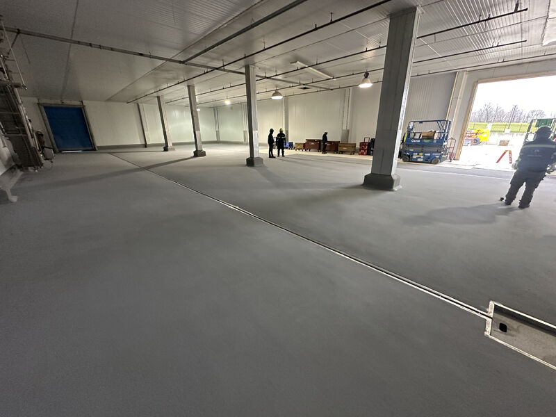

One of our poultry clients converted this old cooler into a brand new processing area. Always great to see our clients growing, and even better when they keep calling SaniCrete to do the floors.

When Growth Means Conversion
Food processing facilities do not stay the same for long. Production lines get added. Equipment gets upgraded. And sometimes, the fastest way to expand is to repurpose space you already have. That is exactly what happened here: an old cooler that was no longer needed for cold storage got a second life as a fully functional processing area.
Converting a cooler into a production space is not as simple as turning up the temperature and moving in equipment. Coolers are built for cold storage, not for the daily abuse of a live processing floor. Chemical washdowns, hot water, heavy rolling loads, constant moisture, and foot traffic demand a flooring system that was designed for those conditions from the start.
Why They Called SaniCrete
This client has worked with us before, and they called us again because they know what they get: a flooring system that holds up under real production conditions and a crew that shows up when they say they will and finishes the job right.
We installed a resinous flooring system engineered for the demands of poultry processing. That means a floor that handles thermal shock from hot water washdowns, resists the chemicals used in daily sanitation, provides the slip resistance workers need on wet surfaces, and maintains a seamless, sanitary surface that meets USDA compliance standards.
For a converted space like this, getting the floor right is especially important. The existing substrate in a cooler was never intended for processing conditions. The right flooring system bridges that gap and makes the space function like it was built for production from day one.
Growth Is Good. Repeat Business Is Better.
It is one thing to win a new client. It is another thing when a client keeps calling you back every time they expand. That tells you the floor is performing the way it should, and the experience of working together was smooth enough that they want to do it again.
We are proud to be the flooring partner this client trusts when they grow. Whether it is a new build, a renovation, or converting an old cooler into a brand new processing area, the floor matters. Get it right, and everything else has a solid foundation to stand on.